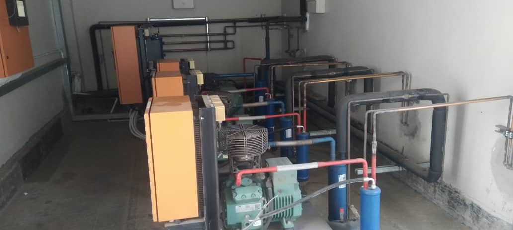

Single-Phase vs Three-Phase Power: What Your Business Needs
If you are opening a workshop, cold room, supermarket, factory or large office, sooner or later someone will ask: "Do you have three-phase?" Many types of commercial equipment either require it or run far better on it. Understanding the difference helps you plan your electrical supply, avoid costly surprises, and protect expensive machinery.

In this guide
The Difference, Simply Explained
Single-phase power is what most Zambian homes have: one live wire and a neutral, delivering about 230V. It is perfectly adequate for lights, sockets, fridges, TVs and a few split air conditioners.
Three-phase power uses three live wires (plus neutral), each carrying alternating current timed a third of a cycle apart from the others. Between any one phase and neutral you still get about 230V for normal sockets, but between any two phases you get about 400V. Because the three phases peak at different moments, the power delivered is smoother and far more of it can be supplied through cables of similar size.
Who Needs Three-Phase Power?
You will likely need three-phase if you run:
- Cold rooms and commercial refrigeration — larger condensing units and compressors are commonly three-phase. See our cold room sizing guide.
- Large air conditioning — ducted, VRF and bigger cassette systems (see split vs ducted AC).
- Workshops and manufacturing — welders, lathes, compressors, milling and processing machines.
- Milling, agro-processing and irrigation — hammer mills and large pumps on farms.
- Supermarkets, hotels, hospitals and larger offices — where total demand is simply too high for a single-phase supply.
- Large generators and inverter systems serving the whole building.
Quick tip: Check equipment nameplates before you buy or sign a lease. A three-phase cold room condensing unit cannot simply be plugged into a single-phase supply, and converting it can be expensive.
Benefits of Three-Phase
- More capacity: much more power can be delivered to the building, leaving room for growth.
- Better for motors: three-phase motors start more easily, run smoother and cooler, and last longer than equivalent single-phase motors.
- Efficiency: lower current per conductor means smaller cables and lower losses for the same load.
- Flexibility: single-phase loads can be spread across the three phases, while heavy machinery uses all three.
Upgrading to Three-Phase
Moving from single-phase to three-phase involves an application to ZESCO for a new or upgraded supply, possibly a new meter and service cable, and changes inside your premises: a three-phase main distribution board, new sub-circuits and often re-planning of existing circuits. The process and timeline depend on the capacity of the local network — in some areas a transformer upgrade may be required. A qualified electrical contractor can calculate your load, prepare the internal installation and liaise on the technical requirements. It is also the perfect moment for a full distribution board upgrade.
Load Balancing
On a three-phase installation, single-phase loads — lights, sockets and small ACs — must be spread evenly across the three phases. If most of the load sits on one phase, that phase overheats and trips while the other two sit half idle, and neutral currents rise. Unbalanced systems are a common cause of nuisance tripping in Zambian commercial buildings that have grown over the years. A load survey with a clamp meter or power logger reveals imbalance, and redistributing circuits is usually a straightforward fix.
Protecting Three-Phase Equipment
Three-phase equipment has a particular weakness: if one phase drops out — which happens during faults and around load-shedding — motors keep trying to run on the remaining two, overheat and burn out within minutes. Protect expensive compressors and machinery with:
- Phase-failure and phase-sequence relays that disconnect equipment if a phase is lost or reversed.
- Over- and under-voltage protection for the brown-outs and spikes common during outages.
- Restart time delays so every compressor doesn't slam on at the same moment power returns.
- Surge protection at the main board.
Backup power must match too: a three-phase building generally needs a three-phase generator and ATS, correctly sized for motor starting loads. Our electrical engineers design, install and upgrade three-phase systems for businesses across Zambia, including industrial sites in Ndola and Solwezi.
Frequently Asked Questions
How do I know if my building has three-phase power?
Look at your meter and main distribution board. A three-phase supply usually has a three-phase meter and a main switch with three or four poles, with breakers arranged in three groups. An electrician can confirm it quickly.
Can I run three-phase equipment on single-phase power?
Some smaller motors can run through a phase converter or variable speed drive, but it is often inefficient and limited. For cold rooms, large AC plant and workshops, a proper three-phase supply is the reliable option.
Is three-phase power more expensive?
The connection and installation cost more upfront, but three-phase supplies large loads more efficiently, and three-phase motors tend to be more efficient and longer-lasting.
What happens if one phase fails?
Single-phase loads on the failed phase lose power, and three-phase motors can overheat and burn out if they keep running on two phases. A phase-failure relay protects against this.
Need a Three-Phase Installation?
Get a free load assessment and quote for three-phase electrical work anywhere in Zambia.
WhatsApp Us